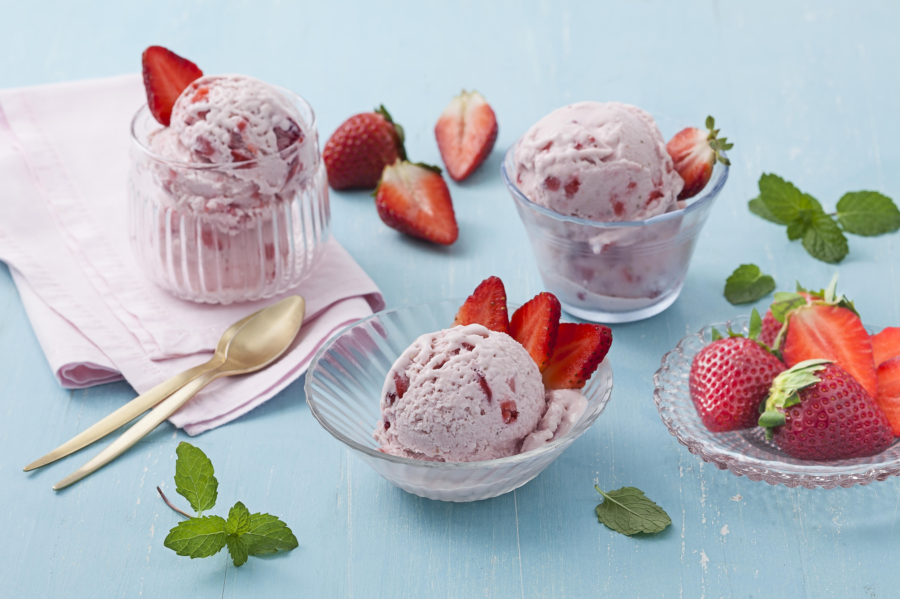
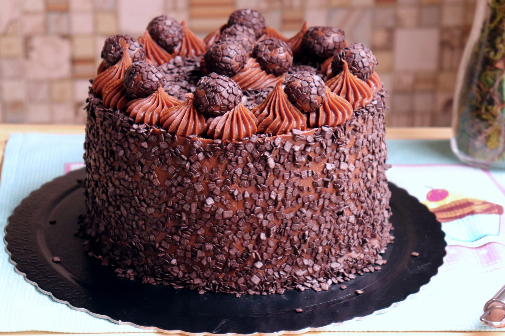
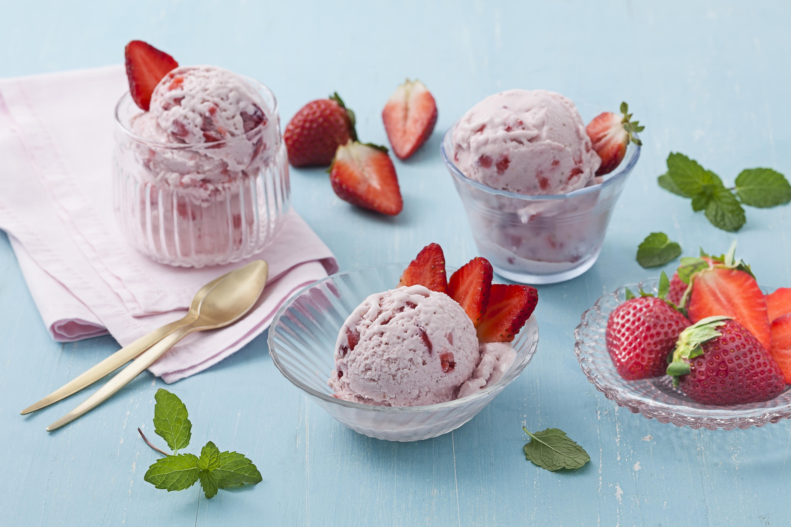
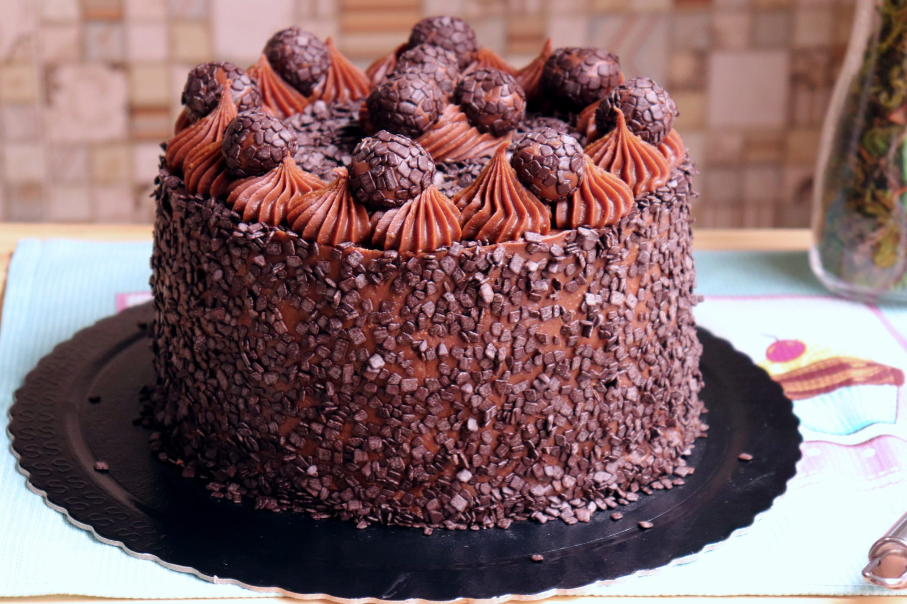

Comidas Favoritas


Seja bem-vindo ao meu site
Olá, me chamo Camila Correia, tenho 17 anos, sou de Umuarama-Paraná e atualmente curso o 3º ano de informática no IFPR-Campus de Umuarama. Gosto de ouvir músicas, ir a igreja e passar o tempo com a minha família.
Aqui você poderá conhecer um pouco mais sobre mim e minhas coisas favoritas.
 




| Disciplina | Professor | Dias das aulas | Carga Horária |
|---|---|---|---|
| Português | Paulo | segunda | 2 aulas/sem |
| Matemática | Alex | segunda e terça | 3 aulas/sem |
| Geografia | Ana Paula | segunda e quarta | 3 aulas/sem |
| Sociologia | Gustavo | terça | 1 aula/sem |
| Inglês | Marta | terça | 2 aulas/sem |
| Física | Otávio | terça e quarta | 3 aulas/sem |
| Biologia | Alex | quarta | 2 aulas/sem |
| Filosofia | Alan | quarta | 2 aulas/sem |
| Edu Física | Nelma | quinta | 2 aulas/sem |
| Linguagem de Programação | Everton | quinta | 3 aulas/sem |
| Redes Comp | Klenilmar | sexta | 2 aulas/sem |
| TecWeb | Borth | sexta | 3 aulas/sem |
Você pode me encontrar através do e-mail: camila.goncorreia@gmail.com
Ou pelo WhatsApp: (44)98433-8419